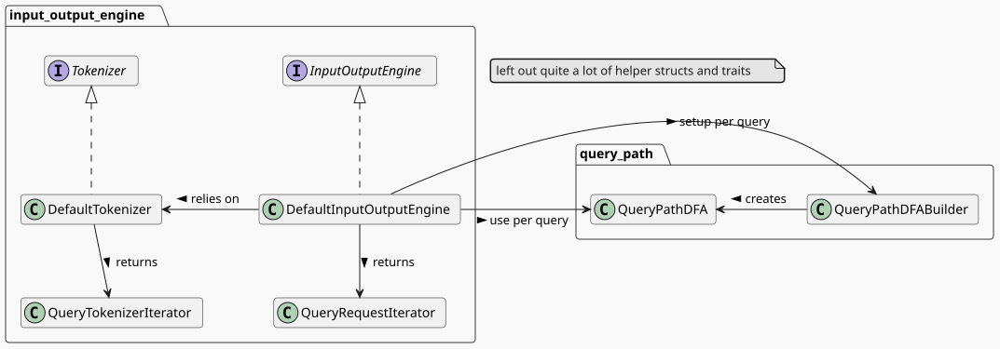

Cottonwood Graph Query Engine
Christopher Besch, Fabian Tolksdorf, Leon Bruns, Thomas Hädicke •
4th September 2025
Cottonwood
Management
- Week 1:
- Design application architecture
- Define inter-team interfaces
- Define intra-team interfaces
- Implement correctly
- Week 2-4: Optimize

General Implementation Approach
- Simple, fix interfaces
- Independent development
- Free to optimize implementation
- Tests, tests, tests!!!
- Rapid iteration
debug_asserts invariances- Bugs easier to find
- No unsafe
- Focus on correctness
- Focus on general optimizations (not edge cases)
Architecture Structure

Architecture Structure

DFA
(A) [-B-> (C)]{2,-} (D)DFA Squashing
(A) [-B-> (C)]{1,-} (C) [-B-> (C)]{1,-} (D)(A) [-B-> (C)]{2,-} (D)
src style="width: 40vw; min-width: 1px;">

() [--> (A)]{6,-} ()
Optimization Benchmarks
Custom Memeplus Benchmark
DFA Squashing
() [--> (A)]{4,-} (A) --> (A) [--> (A)]{1,3} () () [--> (A)]{1,3} (A) --> (A) [--> (A)]{4,-} () () [--> (A)]{6,-} () () [--> ()]{4,-} () --> () [--> (A)]{1,3} () () [--> ()]{6,-} ()Heuristic & Start Everwhere
() -->{1,-} () --> (A)
-B->{1,-} ()
- Insight: Not all start positions equal
- Heuristic
- Idea: many restrictions at start
- Approach: use DFA and rarity of labels
- Restrictions: graph structure unkown
- DFS uses startposition and turns arround
BFS – and when to use it
(A) -B->{1,-} (C)(A) -B->{1,7} (C)(A) [-B-> (M)]{1,-} (C)... --> (A) [-B-> (M)]{1,-} (C)- not:
(A) -B->{3,-} (C)
Results
Lessons learned
- Getting work done in parallel is key
- Great interfaces are great
- designing accurate Heuristics is hard
- Test-driven development can be fast
- Rust Ownership is challenging but
- Rust has great tooling
- Iterators are cool
- no UB; easier debugging